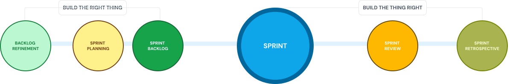
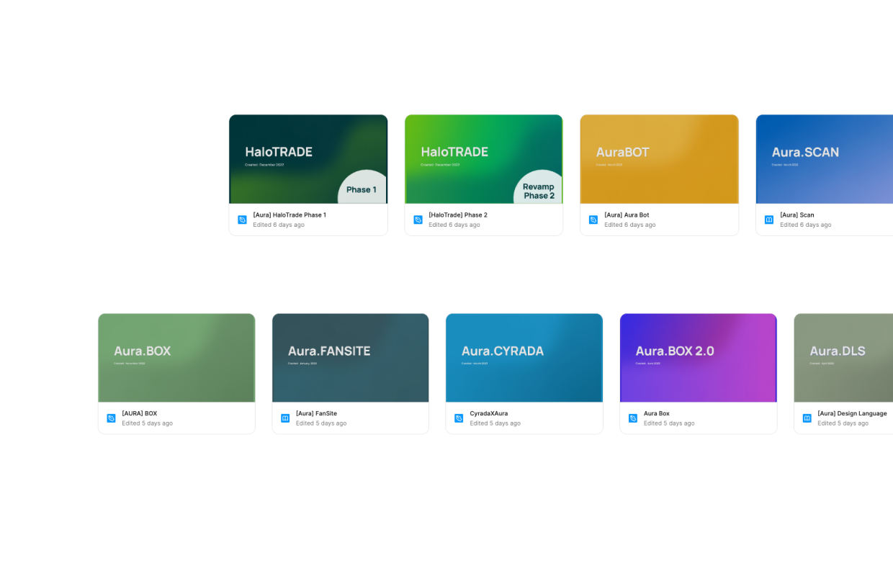

Assumes expert users
Most apps assume the user already understands the technology. Screens are full of acronyms and long alphanumeric strings that early adopters read easily and most people don’t.
Aura Network is a Layer 1 blockchain. Its wallet, explorer, indexer, marketplace, swap and bot were six separate products on one ledger, each with its own squad. In May 2024 the chain under them changed, from a permissioned NFT network to an open EVM Layer 1. This is how I ran the design function across all six and defined products with four engineering groups, up to and through that change.

Market expansion. Positioned to accelerate NFT adoption in emerging markets, particularly Southeast Asia, through user-friendly interfaces and practical use cases.
Partnerships and collaborations. Strategic alliances with Web2 and Web3 organisations to build credibility and make onboarding easier.
Innovation. Integration of NFTs into the metaverse, and multichain interoperability through Cosmos IBC.
Three eras of the web, and what each one added for the person using it: first reading, then writing, then owning. Aura sits in the third, where holding your own keys becomes part of the job.
1991–2004
A static network of text-and-image pages. People read them, and only a few built websites. The first public site went live on 6 August 1991.
2004–present
Blogs, social networks and video sites let anyone post, comment and share. Users made most of the content. The platforms kept the accounts and the data.
Present and forward
Tokens, NFTs and identity sit in a wallet the user controls, not on a platform's servers. The user signs every transaction, and a lost key can't be reset.
Wallet, explorer, indexer, marketplace, swap and bot, plus the two protocols the chain depends on for data and randomness. Each one is a separate product with its own users, and all of them sit on the same ledger.
Why people who aren’t early adopters try it once and leave.
Most apps assume the user already understands the technology. Screens are full of acronyms and long alphanumeric strings that early adopters read easily and most people don’t.
Web3 teams focus on the technology and bring designers in late in the development cycle. Many apps get the visual layer right and still leave people stuck in confusing flows.
Outside of speculation, most apps don’t say what the product is or why someone should use it. Crypto is both an investment and a way to pay, and few apps pick one and design around it.
One transaction can need several confirmations and pending messages, split between a wallet and a DeFi app, minutes apart. Web2 users already find a three-second wait long.
New technological paradigms can only create positive social change if they're widely accessible and experienced by diverse people.
The chasm
While Aura was raising money, design had to make the chain look credible to backers: a brand, a social presence, and research into who it was for. Once the goal turned to adoption, the work moved into the products. That meant interfaces and one design system across every surface, checked against real users through testing, airdrops and usage data.
Strategy
Tools & designs
Implementation
Validate
Optimise
Six product squads and a shared resource pool, each squad owning one surface. What held them together was not a tool. It was one backlog convention, one design system, and a standing agreement about who decides what.
As a leader I believe in empowering each team member by providing clear communication channels, aligning goals, and encouraging innovation.

Each team member stays focused on achieving sprint goals, delivering consistent value, and driving meaningful progress.

We foster open discussions, embrace constructive feedback, and challenge assumptions to drive innovation and improvement.

By maintaining a clear backlog and shared objectives, the team aligns efforts to maximise impact and efficiency.

We value diverse perspectives and expertise, cultivating an environment where new ideas thrive and solutions emerge.


01 Backlog refinement
02 Sprint planning
03 Sprint execution
04 Sprint review
05 Retrospective
Communication plan & RACI chart

All six squads worked in the same tools, so the backlog, the designs and the conversations lived in one place. Automation between them carried the repetitive parts of a sprint (status rollups, hand-off notifications, release notes), so the team could spend its attention on work that needs judgement.
 Figma
Figma
 Jira
Jira
 Discord
Discord

Some of these products are restricted in Vietnam under a new government policy, so they may not open from there.
Fact card
Main features
Audience
Format
Scope
Xstaxy mainnet went live on 20 March 2023, after 15 months of development. It had been announced for 1 October 2022 and moved twice before it landed. Aura EVM followed on 23 May 2024. It turned a permissioned CosmWasm chain built for NFTs into a permissionless, general-purpose EVM Layer 1.
That upgrade shipped with a known seam. EVM and CosmWasm addresses sit in separate zones. You can convert between them, but one address doesn't work in both, so anyone holding assets on each side has two addresses to keep track of. My part was laying out the options and what each one would cost the people using the wallet and the explorer. The founders made the call: ship the seam now, smooth it over later.
The network reports 1.5B+ transactions, 141,000+ unique active addresses and 20+ dApps. Those are totals for the whole chain, built by a lot of teams, so I don't count them as my result.